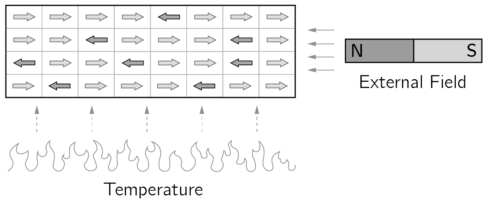
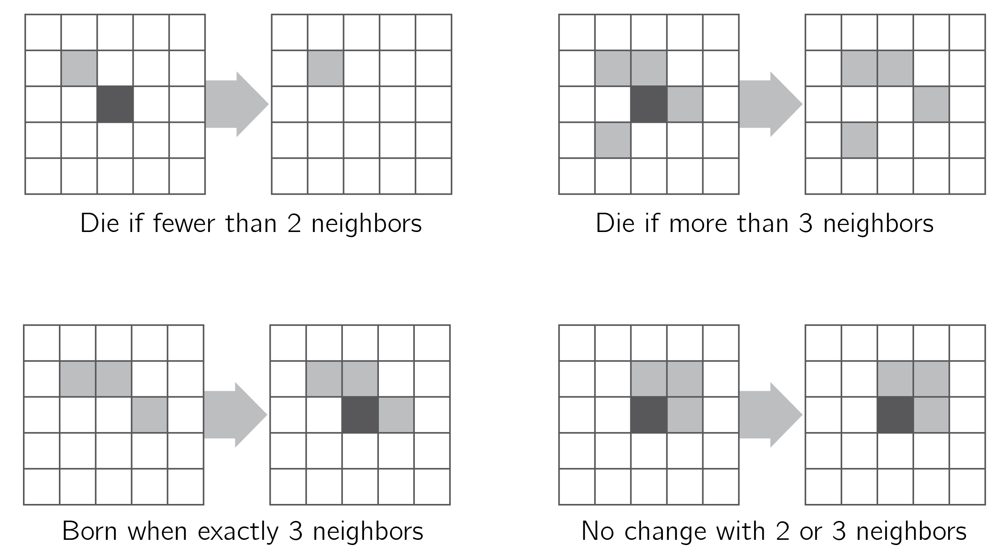
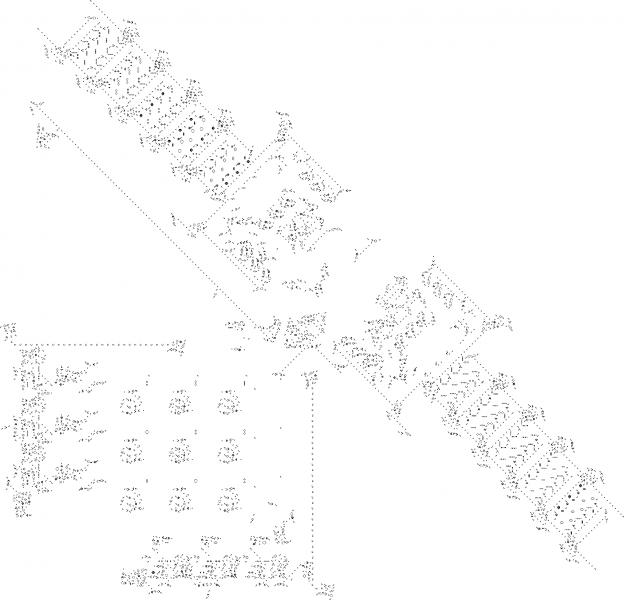
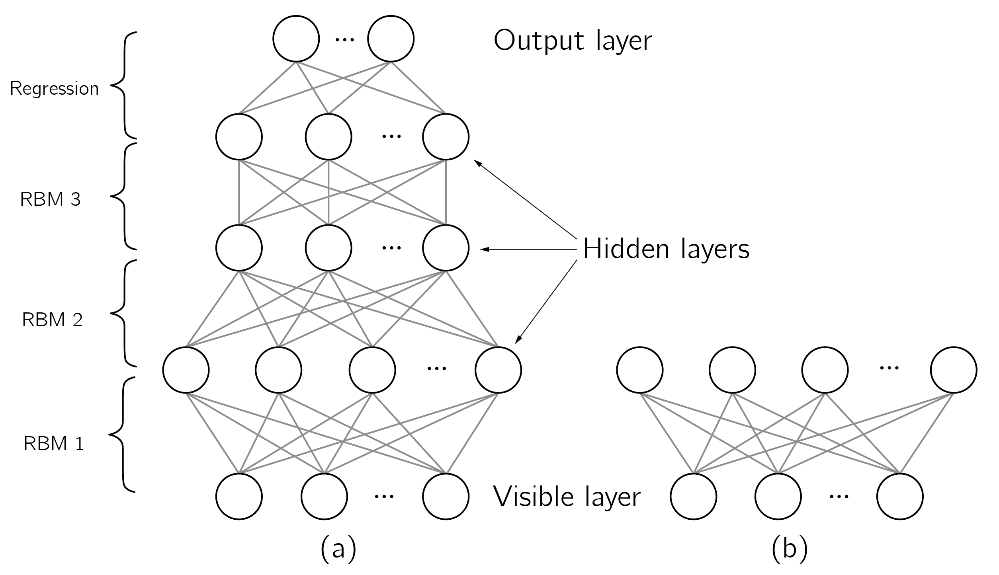

5 自己組織化
5.1 はじめに
第2章と第3章でカオスと相転移を見た。今度は第三の驚くべき性質、すなわち自己組織化に焦点を当てる。 自己組織化は心理的・社会的過程において不可欠な役割を果たす。それは私たちの神経系においてニューロンのレベルで、知覚過程においても高次認知においても作動している。人間の相互作用においては、自己組織化は協力や意見の分極化における鍵となるメカニズムである。
カオスや相転移とは異なり、自己組織化には一般に受け入れられた定義がない。ほとんどの人が同意する定義は、自己組織化すなわち自発的秩序とは、初期には無秩序な複雑系の部分間の局所的な相互作用から大域的な秩序が創発する過程である、というものである。これらの局所的な相互作用はしばしば速く、一方、大域的な振る舞いはより遅い時間スケールで起こる。自己組織化は開放系において起こる。これは、熱や食物といったエネルギーが吸収されうる、ということを意味する。最後に、大域的な性質と局所的な性質の間の何らかのフィードバックが不可欠であるように思われる。自己組織化は多くの物理的、化学的、生物学的、そして人間のシステムで生じる。自己組織化の例には、レーザー、流体の乱流、流体力学における対流セル、化学振動、群れの形成、神経波、そして違法薬物市場がある。自己組織化するシステムの研究の体系的なレビューについては、Kalantari, Nazemi, and Masoumi (2020) を参照。優れたオンライン動画が多くある。入門として「同期の驚くべき秘密（The Surprising Secret of Synchronization）」を推薦する。自己組織化研究の短い歴史については、「Self-Organization」に関するウィキペディアのページを参照されたい。拡張された歴史的レビューについては、Krakauer (2024) を参照されたい。
本章はまた、少数の変数をもつシステムの研究から、多数の変数をもつシステムへの移行を画するものである。私たちは今や、エージェントベースモデリングやネットワーク理論といった、多要素システムを研究するための道具とモデルに焦点を当てる。複雑性と自己組織化が働くのを見ることになる！ これは、前の章が複雑系研究の不可欠な一部ではないと言っているのではない。複雑系の大域的な振る舞いは、しばしば高度に非線形な仕方で振る舞う少数の変数によって記述できる。この大域的な振る舞いを研究するには、カオス理論、分岐理論、そして力学系理論は不可欠な道具である。
本章の主たる目標は、異なる科学における、とりわけ心理学における自己組織化の過程についての理解を提供することである。私は多くの異なる科学分野からの例を提供することでこれを行う。これらの鍵となる例は心理学における新たな研究の系譜に着想を与えうるので、それらを知っておくことが重要である。
私たちは、エージェントベースモデルを用いて神経系や社会系における自己組織化の過程をシミュレートすることを学ぶ。そのために、R ともう一つの道具である NetLogo を用いる。NetLogo は Uri Wilensky (2015) によって開発されたオープンソースのプログラミング言語である。（高度な）代替物もあるが、一般的な道具として NetLogo は非常に有用であり、扱っていて楽しい。
私はまず自然科学における自己組織化の過程の概観から始め、それから NetLogo といくつかの例を紹介する。心理学の異なる領域における自己組織化の応用の概観で締めくくる。
5.2 自然科学からの鍵となる例
5.2.1 物理学
自己組織化の物理的な一例はレーザーである。複雑系理論の重要な創始者はヘルマン・ハーケン (1977) である。彼はシナジェティクス、すなわちシステムにおける自己組織化と複雑性の研究への特定のアプローチを発展させた。これは心理学でも人気がある。シナジェティクスはレーザーに関するハーケンの仕事に由来する。ここではレーザーを詳しく論じないが、その現象は魅力的である。普通のランプの光は不規則（非同期）である。レーザーのエネルギーを増加させることで、強力なコヒーレント光への転移が生じる。シナジェティクスの分野では、秩序パラメータは創発するコヒーレントなレーザー光波を記述するのに用いられる用語である。 このシステム内の個々の原子は、この創発的な性質と整合する仕方で運動し、これは残念ながら隷属（enslavement）と呼ばれる。興味深いことに、これらの原子の運動が秩序パラメータ、すなわちレーザー光波の形成に寄与する。逆に、レーザー光波は個々の原子の運動を支配する。この相互作用は循環的な因果関係、すなわち強い創発を示す（図 fig-ch1-img4 と比較）。以下で見るように、シナジェティクスは知覚 (Haken 1992) や協調的な人間の運動 (Fuchs and Kelso 2018) に応用されてきた。
もう一つの有名な例で、後に心理学的モデリングにとって非常に重要になるのは、磁性のイジングモデルである。このモデルの標準的な2次元版では、原子は二次元格子上の位置である。原子は左（\(-1\)）または右（\(1\)）のスピンをもつ。スピンが揃うとき（すべて \(1\) またはすべて \(-1\)）、実効的な磁石が得られる。それらが揃っていなければ、個々のスピンの効果は打ち消し合う。二つの変数が磁石の振る舞いを制御する。すなわち、磁石の温度と外部磁場である。温度が低いほど、スピンはより揃う。 磁石がその磁力を失う温度はキュリー点と呼ばれる（楽しい実演については YouTube を参照）。外部磁場は別の磁石によって引き起こされうる。

イジングモデルの主なモデル方程式は次のとおりである。
\[ H\left( \mathbf{x} \right) = - \sum_{i}^{n}{\tau x_{i}} - \sum_{< i,j >}^{}{x_{i}x_{j}}, \tag{5.1}\]
\[ P\left( \mathbf{X} = \mathbf{x} \right) = \frac{\exp\left( - \beta H\left( \mathbf{x} \right) \right)}{Z}. \tag{5.2}\]
第一の方程式は、与えられた状態ベクトル \(\mathbf{x}\) のエネルギーを定義する（状態 —1 と 1 をもつ \(n\) 個のスピンについて）。総和における記法 \(<i,j>\) は、すべての近傍の、すなわち結合した対について総和をとることを意味する。ベクトルと行列は太字で表される。
外部磁場と温度はそれぞれ \(\tau\) と \(T\)（\(1/\beta\)）である。第一の方程式は単に、外部磁場と一致するノードがエネルギーを下げる、と述べている。また、等しいスピンをもつ近傍のノードもエネルギーを下げる。四つの結合した正のスピン（figure fig-ch5n-img1-old-39 の右列）だけがあり外部磁場がないとすれば、\(\mathbf{x} = (1,1,1,1)\) で \(H = - 6\) となる。これは \(\mathbf{x} = ( - 1, - 1, - 1, - 1)\) の場合にも当てはまるが、他のどの状態もより高いエネルギーをもつ。
第二の方程式は、ある状態（たとえばすべてのスピンが \(1\)）の確率を定義する。この確率には、すべての可能な状態にわたる確率の和が 1 になることを保証するための正規化 \(Z\) が必要である。大きなシステム（\(N > 20\)）については、可能な状態の数が指数関数的に増大するので、\(Z\) の計算は実質的な問題である。温度が非常に高い場合、すなわち \(\beta\) が 0 に近い場合、\(\exp\left( - \beta H\left( \mathbf{x} \right) \right)\) はすべての可能な状態について 1 となり、スピンはランダムに振る舞う。状態間のエネルギーの差はもはや問題にならない。
振る舞いのランダムさはエントロピーという概念によって捉えられる。これをもう少しよく説明するには、イジング系のミクロ状態とマクロ状態を区別する必要がある。ボルツマンエントロピーは、特定のマクロ状態が実現されうる仕方の数（\(W\)）の関数である。\(\sum_{}^{}x = 4\) については、仕方は一つしかない（\(\mathbf{x} = 1,1,1,1\)）。しかし \(\sum_{}^{}x = 0\) については、六つの仕方がある（\(W = 6\)）。これら二つの場合のボルツマンエントロピー（\(\ln W\)）は、それぞれ 0 と 1.79 である。エントロピーという概念は後の議論で重要になる。
このモデルのシミュレーションでは、ランダムなスピンを一つ取り、現在の \(\mathbf{x}\) のエネルギーと、その特定のスピンを反転させた \(\mathbf{x}\) のエネルギーを計算する。エネルギーの差が反転の確率を決める。
\[ P\left( x_{i} \rightarrow - x_{i} \right) = \frac{1}{ 1 + e^{- \beta\left( H\left( x_{i} \right) - H\left( - x_{i} \right) \right)}}. \tag{5.3}\]
これらの反転を繰り返し行えば、モデルの平衡状態が見つかる。 これはグラウバーダイナミクスと呼ばれる（より効率的なアルゴリズムも存在する）。これらのアルゴリズムの美点は、正規化定数 \(Z\) が方程式から脱落することである。このようにして、\(N\) が 20 よりはるかに大きいイジング系をシミュレートできる。
興味深いことに、完全結合イジングネットワーク（キュリー–ワイスモデルとも呼ばれる）の場合、創発的な振る舞い——平均場の振る舞いと呼ばれるもの——はカスプによって記述できる (Abe et al. 2017; Poston and Stewart 2014)。 外部磁場は正規変数である。温度は分裂変数として作用する。自己組織化との関係は、熱い磁石を冷やすと、ある閾値でスピンが揃い始め、すぐにすべて \(1\) かすべて \(-1\) になることである。これは熊手分岐であり、無秩序から秩序を生み出す。1
2次元イジングモデル（figure fig-ch5n-img1-old-39 を参照）では、結合は疎（局所的のみ）であり、より込み入った（自己組織化する）振る舞いが生じる。 これを本章で後に sec-The-Ising-model でシミュレートし、また第6章 sec-Ising-attitude-model で態度のモデルとしてシミュレートする。
5.2.2 化学
自己組織化するシステムの研究の他の創始者はイリヤ・プリゴジンとイザベル・スタンジェールである。プリゴジンは、散逸系における自己組織化に関する仕事に対して1977年のノーベル化学賞を受賞した。これらは、（高いエネルギー入力ゆえに）熱力学的平衡から遠く離れたシステムであり、相互作用する粒子間の長距離相関ゆえに、複雑で、時にはカオス的な構造が形成される。そのような振る舞いの一つの注目すべき例は、興味深い非線形化学振動子であるベロウソフ–ジャボチンスキー反応である。
スタンジェールとプリゴジンは1978年に影響力のある本『混沌からの秩序（Order Out of Chaos）』を著した。この仕事は、とりわけ熱力学第二法則の定式化を通じて、科学界に大きな影響を与えた。 第二法則を述べる一つの方法は、システムに外部からの仕事が加えられない限り、熱は高温の物体から低温の物体へと自発的に流れ、その逆はない、というものである。より魅力的な例は、自然には決して清潔で整頓されず、むしろその逆になる学生の部屋であろう。
Stengers and Prigogine (1978) は、閉じた系では確かにエントロピーが増大するが、開いた系における自己組織化の過程は秩序ある構造を作り出し、その結果、彼らが「局所エントロピー」と呼ぶものの正味の減少をもたらす、と論じた。プリゴジンとスタンジェールは不可逆的な転移に特に重点を置き、複雑系を理解するうえでのその重要性を強調した。以前論じたカタストロフィモデルは対称的な転移を示した（名刺における突然のジャンプは対称的である）が、プリゴジンの研究は、この対称性が常に成り立つわけではないことを明らかにした。
この点を例示するために、目玉焼きを作る類推を考えよう。生卵を焼いた形に変える過程は相転移を表すが、この変化を逆にして卵を「焼き戻す」ことは不可能である。プリゴジンはこれらの不可逆的な転移を、時間の方向についての深遠な問い、一般に時間の矢として知られるものと結び付けた。それはそれ自体、魅力的な話題だが、ここではこれ以上探求しない。
5.2.3 生物学
複雑系科学の創始者には事欠かない。もう一つの素晴らしい本はスチュアート・カウフマンの『秩序の起源（Origin of Order）』（1993）であり、自己組織化という概念を進化論に導入している。彼は、新ダーウィン主義的な過程における小さな漸進的なステップでは自然進化を完全には説明できない、と論じている。荒れたフィットネスランドスケープにおける適応的な歩みやニッチのホッピングについて知りたければ、彼の本を読む必要がある (Kauffman 1993)。もう一つの影響力のある理論は断続平衡説であり、種は長い安定の期間を、比較的短い急速な進化的変化の爆発によって中断されつつ経る、と提案する (Eldredge and Gould 1972)。
進化における自己組織化の役割の見事な例は、Boerlijst and Hogeweg (1991) による前生物的進化における螺旋波構造に関する仕事である。この仕事は、情報の閾値に関するアイゲンとシュスターの (1979) 古典的な仕事に立脚している。進化には長い分子の複製が必要である。しかし、自己複製する分子の系では、分子の長さは複製の正確さによって制限され、それは変異率に関係する。アイゲンとシュスターは、そのような分子が、各分子が最近傍の分子を触媒するハイパーサイクルとして組織されれば、この閾値を克服できることを示した。 しかし、ハイパーサイクルは寄生者に対して脆弱であることが示された。これらは、一方の隣接者から利益を得るが他方を助けない分子である。この分子は他を競争で打ち負かし、私たちは限られた一分子系に逆戻りする。
ブールリストとホーヘヴェグが行ったのは、ハイパーサイクルをセルオートマトンに実装することであった。ハイパーサイクルのシミュレーションでは、セルは空（死んでいる）か、いくつかの色の一つで満たされている。色はある確率で死ぬが、局所的な近傍に触媒する色があるかどうかに依存する確率で、空のセルに複製もされる。色の一つは寄生者であり、一つの色によって触媒されるが他のどの色も触媒しない。その効果は、後に NetLogo を用いて見ることになるが、回転する大域的な螺旋が創発して寄生者を隔離し、安定なハイパーサイクルが優勢になる、というものである。
自己組織化の多くの例は生態系生物学に由来する。以下で NetLogo における群れの形成のシミュレーションを見るが、私はアリの集団的な振る舞いも強調したい（figure fig-ch5n-img2-old-40）。
アリは大域的に組織化された振る舞いの驚くべき形を示す。彼らは橋、巣、いかだを作り、捕食者を撃退する。巣を移転すらする。アリのコロニーはフェロモンと群れ知能を用いて移転する。斥候が潜在的な場所を探し、フェロモンの跡を残す。有望な場所が見つかれば、より多くのアリが跡をたどり、信号を強化する。不適当な場所では跡が薄れる。いったん決定がなされると、コロニーは集団的に選ばれた場所へと移動し、幼虫を運び、新たな巣を築く。
アリの社会を生きた生物と考えることは奇妙な考えではない。この振る舞いすべてが自己組織化されていることに注意しよう。橋を建てるための設計図をもち、残りのアリに特定のことをするよう命じるスーパーアリなど明らかに存在しない。アリはまた、組織するために長い経営会議を開くこともない。同じことが鳥の群れにも当てはまる。集団的に左へ、右へ、あるいは分裂せよと命令をさえずる鳥など存在しない。これは人間の脳にも当てはまる。個々のニューロンは知的ではない。
5.2.4 計算機科学
自己組織化研究のもう一つの重要な源は計算機科学である。単純だが全く驚くべき例は、ジョン・コンウェイのライフゲームに関する仕事である (Berlekamp, Conway, and Guy 2004)。その規則は figure fig-ch5n-img3-old-41 に描かれている。

各セルについて、その近傍の状態が与えられると、すべてのセルの次の状態が計算される。これは同期更新と呼ばれる。2 ランダムな初期状態から始めた場合に何が起こるかを予測するのは難しい。しかし、四つの正方形のブロックが安定であること、そして三つのブロックの線が水平の線と垂直の線の間で振動することは容易に確かめられる。
ライフゲームで遊ぶための優れた道具は Golly であり、コンピュータや携帯電話向けに無料で入手できるアプリケーションである。Golly をダウンロードして開き、いくつかランダムな線を描き、Enter を押して何が起こるかを見てほしい。しばしば、それが（振動する下位パターンをもつ）安定状態に収束するのが見られるだろう。時折、ウォーカーやグライダーが見られる（縮小表示せよ）。これらは場を動き回るパターンである。
ランダムな初期パターンはめったに注目すべきものをもたらさないが、特別な初期状態を選ぶことで、驚くべき結果が得られる。まず、Life within Patterns フォルダを見てみよ。たとえば line-puffer superstable や宇宙船のタイプの一つを取ってみよ。私のお気に入りは HashLife フォルダの metapixel galaxy である。+ と — のボタンを用いてシミュレーションを速めたり遅くしたりできることに注意しよう。これが行うのは、ライフゲームの中でライフゲームをシミュレートすることである！ 実際に何が起こっているかを見るために拡大・縮小せよ。私はこれを何度も見てきたが、いまだに当惑している。 子どもじみているが楽しい実験は、metapixel galaxy をいくつかのセルで撹乱することである。これは大きな撹乱とパターンの崩壊をもたらす。
ライフゲームの中で（万能）チューリングマシンを作ることが可能であることを見て、私はさらに驚いた (Rendell 2016)。チューリングマシンのライフゲームによる実装は figure fig-ch5n-img4-old-42 に示されている。これは、そのような単純な要素間の初歩的な相互作用を用いて、自己組織化する知的なシステムを構築できるのか、という問いを提起する。実は、ある程度まではできるが、脳に似たメカニズムに基づく異なる設定を用いることによってである（次のニューラルネットワークに関する節を参照）。

複雑系理論と、計算システムにおける自己組織化の役割のもう一つの源はサイバネティクスである (Ashby 1956; Wiener 2019)。 この非常に独創的な仕事の雰囲気を伝えるために、元々1948年に出版されたノーマン・ウィーナーの本のいくつかの章の題名だけを挙げよう。「ゲシュタルトと普遍者」「サイバネティクスと精神病理学」「学習し自己再生する機械について」、そして最後に「脳波と自己組織化」である。そしてこれは1948年に書かれたのである！
自己組織化への関心は理論的なものだけではない。最適化、すなわちあるデータを記述するモデルの最良のパラメータの探索において、セルオートマトンや自己組織化に着想を得た技法が応用されてきた (Langton 1990; Xue and Shen 2020)。私は遺伝的アルゴリズム (Holland 1992a; Mitchell 1998) に常に魅了されてきた。そこでは、問題への解（パラメータ値の集合）が進化する集団における個体である。 変異と交叉を通じて、より良い個体が進化する。これは遅いが非常に頑健な最適化の方法であり、局所最小値への収束を防ぐ。
ジョン・ヘンリー・ホランドは、米国における複雑系アプローチの創始者の一人とみなされている。彼は複雑系についていくつもの影響力のある本を書いた。彼の最も有名な本『自然系および人工系における適応——生物学、制御理論、人工知能への応用を伴う入門的分析（Adaptation in Natural and Artificial Systems: An Introductory Analysis with Applications to Biology, Control Theory, and Artificial Intelligence）』(Holland 1992b) は、75,000回以上引用されている。
私の応用の仕事で大きな役割を果たした自己組織化するアルゴリズムは、チェスの競技のために開発されたイロレーティングシステムである (Elo 1978)。 対局の結果に基づいてチェスプレイヤーのレーティングが推定され、それがひいては将来の対局でプレイヤーをマッチングするのに用いられる。レーティングは時間とともに収束するが、プレイヤーの技能が変化するにつれて調整される。私たちは、子どもが算数や言語の練習問題に対して対局するオンライン学習システムでの使用のために、このシステムを適応させた (Maris and van der Maas 2012)。子どもと練習問題のレーティングは、大規模な教育システムにおいてその場で推定される (Klinkenberg, Straatemeier, and van der Maas 2011)。私たちはこのシステムを、発達過程における突然の転移についての私たちの仮説を検証するために高頻度の学習データを集めるために構築したが、それはオンライン適応型練習システムとしてより成功した。私たちはこのシステムで数十億の項目反応を集めた (Brinkhuis et al. 2018)。
5.2.5 ニューラルネットワーク
私たちの日常生活に大きな影響を与えている現在の AI 革命は、いくつもの自己組織化する計算技法によるものである。疑いなく、深層学習ニューラルネットワークが最大の役割を果たしてきた。ニューラルネットワークの分野の本格的な概観は明らかに本書の範囲を超えるが、少なくとも人工ニューラルネットワーク（ANN）、すなわち人工ニューロンのネットワークの基本を知らずに、心理学における複雑系の役割を理解することはできない。 ANN は、層に組織された相互接続されたノード、すなわち「ニューロン」から成り、ネットワークを通じて信号を伝播させることで情報を処理する。ANN はデータで訓練されてパターンや関係を学習し、それによって分類、回帰、パターン認識といった課題を遂行できるようになる。
人工ニューロンは、ネットワーク内の他のニューロンからの入力への応答によって特徴づけられる。その入力は通常、活性化関数を通される前に重み付けされ、総和される。この活性化関数は、二値の出力を生み出すか、ニューロンの活性化の水準を反映する連続的な値を生み出す。入力はたとえば画像でありうるし、出力はこれらの画像の分類でありうる。重要なのは、ニューラルネットワークが例から学習することである。
教師なし学習は入力の構造に基づく。有名な教師なし学習の規則はヘッブの規則 (Hebb 1949) であり、ともに発火するものはともに結線する、と述べる。したがって、活動が相関するニューロンはその結合を強化する（そうでなければ結合は減衰する）。教師あり学習では、逆伝播を通じて、モデルの出力と意図された出力の間の不一致に基づいて結合が更新される。 ヘッブ学習と逆伝播は、現代の ANN で用いられる学習メカニズムのうちのわずか二つである。
GPT のような現代の大規模言語モデルは、そのアーキテクチャ、訓練目的、事前学習過程、規模、そして応用の点で、伝統的な逆伝播ネットワークと異なる。大規模言語モデルは、トランスフォーマーアーキテクチャを用い、教師なし事前学習に続いて教師ありのファインチューニングを経て、膨大な量のラベルなしデータで訓練され、規模がはるかに大きく、主に自然言語処理の課題に用いられる。
もう一つの重要な区別は、順伝播型ニューラルネットワークと再帰型ニューラルネットワークの間の区別である。 興味深い再帰型の教師なしモデルはボルツマンマシンである。それは基本的に、ノード間の結合が連続的な値をもつイジングモデル（sec-Physics を参照）である。これらの結合すなわち重みは、ヘッブの規則に従って更新できる。ボルツマンマシンの単純な設定は、結合した人工ニューロンのネットワークを取り、これらのニューロンの状態を入力に等しく設定することで、学習すべき入力をある順序で提示することである。ヘッブの規則は、ボルツマンマシンがこれらの入力状態の記憶を構築するように、ニューロン間の重みを変えるべきである。 これが訓練の相である。検証の相では、すべてではなく一部のノードを特定の学習された入力パターンの値に設定することで、部分的な状態を提示する。グラウバーダイナミクスによって、パターンに属する値を取るはずの残りの状態を更新する。このパターン補完の課題は ANN に典型的である。
この設定は一般ボルツマンマシンないし制限のないボルツマンマシンと呼ばれ、どのノードも他のどのノードとも結合でき、各ノードが入力ノードである。制限ボルツマンマシン（RBM）は、その計算効率のためにはるかに人気がある。RBM では、ノードは層に組織され、層間には結合があるが層内にはない。深層 RBM では、これらの層を多く積み重ね、それらを対ごとに訓練できる（figure fig-ch5n-img5-old-43）。3 他の著名なアプローチは、コホネンの自己組織化マップとホップフィールド・ニューラルネットワークである。

ニューラルネットワークの人気の波は、教師あり学習アルゴリズムの発展と密接に関係している。そこでは、人工ニューロン間の結合が、ネットワークの出力と望ましいまたは期待される出力の間の差に基づいて更新される。最初の教師あり ANN であるパーセプトロンは、複数の入力ノードと一つの出力ノードから成り、線形分離可能なクラスからの入力パターンを分類できた。これには OR と AND の関係が含まれたが、XOR の関係は除外された。 XOR では、二つのビットの和は分類に有用でない。パーセプトロンに隠れ層を加えることで XOR は解けるが、多層ネットワークがこの非線形の分類を例から学習できるような逆伝播の規則を開発するには、長い年月がかかった。以下で NetLogo で簡単なシミュレーションを行う。それらは極めて強力だが、逆伝播ネットワークが自己組織化するシステムであるかどうかは議論の余地がある。自己組織化するシステムは、明示的な指示なしに環境に適応する能力によって特徴づけられる。教師なしニューラルネットワークはこの点でより興味深い。
これらのモデルはすべて20世紀末までに知られていたが、その有用性は限られていた。これは、アルゴリズム、とりわけハードウェアのいくつかの改良によって変わった。現在の深層学習 ANN は、数十億のノードの中の数十の層から成り、専用の並列プロセッサを用いて数十億の入力で訓練される (たとえば Schmidhuber 2015)。
ニューラルネットワークは AI 革命の中心にあるが、他の発展、とりわけ強化学習も鍵となる役割を果たしてきた。 例はゲームエンジン、ロボット、そして自動運転車である。強化学習の研究もまた心理学にその根をもつことに注意しよう (Sutton and Barto 2018, の第1章を参照)。
私は AlphaZero チェスの構築と性能に最も驚かされた。AlphaZero チェス (Silver et al. 2018) は、局面を評価し次の手を予測する深層学習ニューラルネットワークを、強化学習の変種（モンテカルロ木探索）と組み合わせている。驚くべきことに、AlphaZero は数百万の自己対局を通じてチェスを学習する。このアプローチは、力任せの探索と、序盤と終盤の組み込まれた索引が成功の鍵であった古典的なチェスプログラムからの急進的な離脱である。 学習するにつれ、それは約64,000の訓練ステップの後に学習における相転移を示す (McGrath et al. 2022, の図7を参照)。心理学と現代の AI の間の相互関係の分析については、van der Maas, Snoek, and Stevenson (2021) を参照されたい。
AlphaZero によるモンテカルロ木探索の使用もまた、記号的人工知能の一形態である。古典的な記号的アプローチをニューラルネットワークと組み合わせるという考えは、常に漂っていた。このハイブリッドなアプローチの第三の波は Garcez and Lamb (2023) でレビューされている。
5.2.6 自己組織化という概念
あなたが今や、自己組織化とそのさまざまな科学分野にわたる応用について、いくらかの理解をもっていると信じる。自己組織化は、さまざまな分野を超越する一般的に適用可能な概念でありながら、各分野内の特定の例との強い結び付きを保っている。
前に述べたように、自己組織化の精確な定義は依然として議論の下にあり、さまざまな基準が議論され続けている。システムが自己組織化されているとみなされるのに必要な秩序の度合い、いかなる外部からの影響が許容されるか、システム内のある程度のランダムさが受け入れられるか、そして創発する状態が不可逆でなければならないか、といった鍵となる問いは、確定的な解決を欠く問題の一つである。
定義におけるこの曖昧さは、心理学者にとっては珍しいものではない。というのも、多くの非形式的な概念は厳密な定義を欠くからである。自己組織化という概念の価値は、主にその具体的な例に、人工知能の分野のようなその広い適用可能性に、そしてそれをシミュレートする私たちの能力に見出される。次節の焦点は、専用の道具である NetLogo を用いたそのようなシミュレーションにある。
5.3 NetLogo
5.3.1 例
NetLogo (Wilensky and Rand 2015) は、コンピュータ言語の初期の画期的な教育用プログラミング言語である Logo に基づいている。そこでは、画面上のタートル、すなわちカーソルを動かしてグラフィックスを作れた。4 タートルはまだそこにあるが、NetLogo でできることははるかに多い。
本章の次の部分のために、NetLogo をダウンロードしてインストールすることを強く推奨する。
イジングモデル
NetLogo を起動すると、黒い領域（世界）、すなわちパッチ（セル）の 33×33 の行列をもつインターフェースが見える。設定を用いて世界を変えられる（右上を参照）。Interface と Code が最も重要なタブである。
まず、モデルライブラリ（メニュー File: Model Library）を開き、「Ising」を見つけて開け。setup と go をクリックせよ。それだけである。高温が確かにランダムなスピンの振る舞いを引き起こすことを確かめよ。また、温度を下げると熊手分岐が引き起こされることを確かめよ。ランダムな状態が不安定になり、すべてのスピンが正か負のいずれか（明るいまたは暗い青）になる。さて Settings に行き、max-pxcor と max-pycor を 200 に、Patch size を 1 に設定せよ。これらの設定で、自己組織化する大域的なパターン、絶えず動く正と負のスピンのクラスターが見られる。
ハイパーサイクル
いくつかのモデルは NetLogo で利用可能であり、他のものは NetLogo のウェブサイト（Community を参照）で見つかる。Maarten Boerlijst による「Hypercycle」をダウンロードし、情報を読め。八つの種でモデルを 20,000 回の反復すなわちティックのあいだ実行し（速めるには view updates の選択を外せ）、それから add parasites せよ。螺旋が寄生者の増殖を制御下に置く。これをより早く行えば、寄生者はすぐに乗っ取る。私はこれが機能的自己組織化の美しい例だと思う。セルオートマトンの形での実装が、このモデルの成功に不可欠である。このモデルを結合微分方程式の形で実装すれば、寄生者が単に勝つ。
群れの形成
NetLogo 3D は、自己組織化するパターンの三次元プロットを作ることを可能にする。NetLogo 3D を起動し、群れのモデル「3D Alternate」を読み込め。Population スライダーを右クリックして max を 1,000 に設定して編集することを勧める。これはより現実的な群れ（スウォーム）をもたらす。操作系で遊び、すべての鳥を殺すな。
交通
NetLogo（3D ではない）のモデルライブラリに「Traffic 2 Lanes」が見つかる。20台の車でモデルを実行し、渋滞が実際に後方へ動くことに気づけ。車の数でも遊べ。車の数をゆっくり増やしていくと、渋滞が生じる明確な閾値はあるか。そして車の数を減らすと何が起こるか。渋滞が消散する閾値はあるか。この仕方でヒステリシスを見つけるのがかなり難しいことがわかるだろう。明らかに突然の変化はあるが、ヒステリシスを見つけるには非常に精確で辛抱強い実験が必要である。
ニューラルネットワーク
モデルライブラリに「Perceptron」と「Multilayer network」が見つかる。パーセプトロンから始めよ。目標関数を and に設定し、モデルを数秒間訓練し、パーセプトロンを検証せよ。それが 11 を 1 として、他のパターンを —1 として正しく分類することが見られるだろう。右下のグラフは特に教育的である。それはパターンがどのように分離されるかを示す。パーセプトロンは線形分離ができる。これは学習できるほとんどの論理規則には十分だが、XOR には十分でない（sec-Neural-networks を参照）。線形分離がただ跳ね回り、XOR が学習できないことが見られるだろう。多層モデルも XOR で訓練せよ。遊ぶためのもう一つの良い道具は、「a neural network playground」を検索することでインターネットに見つかる。
もちろん、これらは単に例示的な道具にすぎない。しかし、本格的な深層学習 ANN を構築することもそれほど難しくない。多くの資料や本が利用可能である (たとえば Ghatak 2019)。
砂山モデル
Bak, Tang, and Wiesenfeld (1988) は自己組織化臨界性という概念を導入した。イジングモデルのようなシステムには、システムが臨界状態に達するために精確に調整されなければならないパラメータ（たとえば温度）がある。バク–タン–ヴィーゼンフェルトの砂山モデルは、いかなるパラメータもなしに臨界現象を示す。 砂山モデルでは、砂粒が砂山の中心に加えられる。中心の柱とその近傍の間の高さの差が臨界値を超えると、砂粒がその近傍の位置へと転がる。これは時折なだれをもたらす。要点は、どのように始めても、これらのなだれが生じる臨界状態に到達する、ということである。したがって、砂山モデルは自発的にその臨界点へと進化し、これがこの現象が自己組織化臨界性と呼ばれてきた理由である。
モデルライブラリの NetLogo モデル「Sandpile」はこの振る舞いを実演する（setup uniform、center drop location、animate avalanches を用いよ）。今や砂粒をテーブルの中心に一度に一粒ずつ落とし、なだれを生み出す。右のプロットは自己組織化臨界性の重要な特徴を示す。なだれの大きさと持続時間の頻度はべき則に従う。べき則の関係はしばしば数学的に \(Y=aX^k\) と表される。ここで \(Y\) と \(X\) は関心のある量、\(a\) は定数の係数、\(k\) はべき則の指数である。べき則はそのスケール不変の性質で注目に値し、これは、関係の形が \(X\) と \(Y\) の異なるスケールにわたって変わらない、ということを意味する。これは、両対数プロットが線形であるべきことを意味し、モデルをしばらく実行することで確かめられる。べき則分布の鍵となる特徴の一つは、高い度合いの変動性ないし異質性を示すことである。これは、多くの小さな出来事や現象と、少数の非常に大きなものがあり、その間に大きさの滑らかな分布がある、ということを意味する。べき則系はスケール不変であり、これは、砂山のどのスケールでも同じ振る舞いが見られる、ということを意味する。この理由から、それらは時にスケールフリー分布と呼ばれる。
他のモデル
他にもいくつかのモデル（たとえば「Sunflowers」「Beatbox」「B—Z reaction」）を実行することを勧める。まだ行っていない一つのことは Code タブをクリックすることである。B—Z 反応のコードを読み、一つのことに気づけ。それは驚くほど短い！
5.3.2 NetLogo プログラミングを少し
私は NetLogo プログラミングを、非常に容易であると同時に非常に難しいと思う。難しいのは、異なる考え方が必要だからである。Uri Wilensky の例はしばしば極めて優雅で、私の不器用なコードよりもはるかに短い。NetLogo はオブジェクト指向プログラミング言語に似ており、（ベース）R とはかなり異なる。三つのタイプのオブジェクトがある。すなわち、世界の格子（CA）内のセルを指すパッチ、動き回るエージェントであるタートル、そしてタートルを結ぶリンクである。タートルは必ずしもカメではないことに注意しよう。私たちはすでにニューラルノードや車の形でタートルを見てきた。
NetLogo では、オブジェクトに何かをするよう「尋ねる（ask）」。典型的な一行は次のようになる。
ask turtles with [color = red ] set color green
これは赤いタートルを緑にする。始めるにあたり、NetLogo のページ「The Beginner’s Guide to NetLogo Programming」の動画を見て、これらの例に従うことを強く推奨する。ここでは私たち自身のライフゲームを作る。
5.3.2.1 ライフゲーム
まず、インターフェースに二つのボタン、setup と go を作れ。Command で、それらを「setup」と「go」と名付けよ。go ボタンの設定で forever を選べ。さて Code タブに行き、これら二つの関数を次のように定義せよ。
to setup
clear-all
reset-clicks
end
to go
tick
end
Ticks は NetLogo における反復を数え、このコードで私たちはただ物事をリセットしている。この例では、タートルの代わりにパッチを用いる。パッチは、NetLogo モデルにおける「世界」を構成する格子のセルすなわち正方形である。さて、setup にこの最後の行を加えよ（セミコロンでコードにコメントを加えられる）。
ask patches
[set pcolor one-of [ white blue ]] ; white is dead, blue is alive
同期更新を行うには、更新された state を new-state と呼ばれる一時変数に格納する必要がある。この行をコードの先頭に置け。
patches-own [new-state]
go 関数に、ライフの規則を加える。
ask patches [
if ( neighbors with [pcolor = blue ]) > 3 ) [set new-state white ]
if ( neighbors with [pcolor = blue ]) < 2 ) [set new-state white ]
if ( neighbors with [pcolor = blue ]) = 3 ) [set new-state blue ]
]
ask patches [ set pcolor new-state ]
最後の行は state を new-state に更新する。それだけである！ 私たちはライフゲームのシミュレーションを構築した。setting を用いてより大きな世界を作れ。このコードへのいくつかの拡張を見るには、モデルライブラリのライフゲームプログラムのコードを見てみよ。Help メニューに、非常に有用な NetLogo 辞書が見つかる。この辞書を読み通すだけで、多くの有用な技を学べる。NetLogo は、組み込み関数をできるだけ用いるべきである点で R に似ている。
5.3.2.2 イジングモデル
NetLogo モデルをゼロから構築するにはかなりの経験が必要である。プログラムを適応させるほうがはるかに容易である。NetLogo のイジングモデルは、外部磁場のスライダーがないので完全ではない。これを自分で加えてみよ。外部磁場 tau のスライダーを加えよ。コードはこの行でのみ変える必要がある（equation eq-ch5n-1-old-17 を研究せよ）。
let Ediff 2 * spin * sum [ spin ] of neighbors4
成功すれば、ヒステリシスとダイバージェンスを検証できる。tau = 0 について、温度を下げると熊手分岐が得られるはずである。正の温度（たとえば 1.5）について、tau を上下に動かすとヒステリシスが得られるはずである。
実は、すべてのスピンがすべてのスピンに結合していれば、これはより良く機能するはずである。これを行うには、neighbors4 を patches に置き換えよ。これほど多くのスピンの効果を正規化するために、次を用いることを勧める。
let 0.001 * Ediff 2 * spin * sum [ spin ] of patches
今や、ヒステリシスと熊手がより良く見られるはずである。しかし、この場合、局所的な相互作用のみをもつイジングモデルで生じた典型的な自己組織化するパターン形成は存在しない（sec-Physics の最後の部分を参照）。
5.5 引いて見る
私は、非常に無秩序で学際的な研究分野の、組織化された実践的な概観を与えることに成功したと願っている。各下位分野について、最近の専門的な貢献を見つけるのに役立つはずの鍵となる文献を提供した。私は自然科学における自己組織化の例を魅力的で着想を与えるものと思う。この概念の心理学と社会科学における応用が大きな将来性をもつことも示せたと願っている。次の章では、より詳細な例を提示する。
私は、モデルを理解するには、たとえばシミュレーションを通じて、モデルとともに働くことが必要だと信じている。NetLogo はこれに優れた道具だが、多くの代替物がある (Abar et al. 2017)。NetLogo のすべての用途に触れてはいないが、BehaviorSpace のオプションについて知っておくとよい。BehaviorSpace は、（可視化なしに）モデルを繰り返し並列に実行し、モデルの設定とパラメータを体系的に変化させ、各モデルの実行の結果を記録する。これらの結果はそれから R でさらに分析できる。一例は第7章 sec-Segregation で提供する。
私は本章でネットワークアプローチを大部分省いた。心理学的ネットワークモデルは、心理学における複雑系の自己組織化の最近の応用であり、次章の主題である。
5.6 演習問題
炊飯器とイジングモデルの間に関係はあるか。伝統的な炊飯器の磁気サーモスタットは、米が炊けたときに自動的に炊飯を止めるためにどのように機能するか。(*)
10 個のノードをもち外部磁場のない（ノードの状態が \(-1\) と \(1\) の）イジングモデルにおいて、状態 \(\sum_{}^{}x = 0\) のボルツマンエントロピーは何か。(*)
ウェブページ「A Neural Network Playground（https://playground.tensorflow.org）」に行け。XOR をほぼ完璧な正確性で解く最小のネットワークは何か。x1 と x2 の特徴だけを用いよ。(*)
グラノヴェッターのモデル（sec-Social-relations）では、人々はダンスをやめることもある（確率 .1 で）。これをモデルに加えよ。これは平衡状態の振る舞いをどう変えるか。(*)
NetLogo のイジングモデル（neighbors4 の場合）に外部磁場を加えよ。NetLogo コードの変えた行を報告せよ。インターフェースで何を変えたか。
温度を 1.5 に設定せよ。tauをゆっくり変えよ。tauのどの値でヒステリシスのジャンプが生じるか。(*)イジングモデルが確かにカスプであるかを検証せよ。BehaviorSpace ツールを用いて NetLogo でイジングモデルを実行せよ（例については figure fig-ch7-img1-old-89 を参照）。すべてのスピンがすべてのスピンに結合しているモデルを用いよ（sec-The-Ising-model を参照）。
tau（-.3 から .3 まで .05 刻み）とtemperature（0 から 3 まで .5 刻み）を変化させよ。パラメータ値の組み合わせごとに一回の反復で十分である。10,000 ティックの後に止め、最終的な磁化のみを集めよ。データを R に取り込み、カスプを当てはめよ。どのカスプモデルがデータを最も良く記述するか。(**)NetLogo3D で Sandpile 3D モデルを開け。砂粒がランダムな場所に落ちる。それらがすべて中央に落ちるように一行のコードを変えよ。何を変えたか。(*)
NetLogo コミュニティのウェブサイトから「Motion Quartet」をダウンロードし、自分自身の知覚におけるヒステリシスを探求せよ。分裂変数は何でありうるか。(*)
NetLogo でグラノヴェッターのモデルを実装せよ（最大40行のコード）。(**)
NetLogo でライフゲームを実装するか Golly を用いて、ライフゲームで生じうる六つの単位の質的に異なる安定なパターンをできるだけ多く見つけてみよ。それ以上見つけられなければ、見逃した他のパターンを見つけるためにオンラインの追加資料を見てみよ。四つの単位については、二つしかなく、そのうち一つは四つのブロックである。(*)
この原理の極めて有用な応用は炊飯器である！↩︎
同期更新では、セルオートマトンのすべてのセルが同時にその状態を更新する。これは、与えられた時間ステップにおける各セルの新たな状態が、前の時間ステップにおけるその近傍の状態のみに依存する、ということを意味する。非同期更新では、セルは一度にすべてではなく、一つずつその状態を更新する。セルが更新される順序は、決定論的（順序をなす）でも確率的（ランダム）でもありうる。これら二つの異なる更新スキームは、セルオートマトンにおいて非常に異なる振る舞いをもたらしうる。↩︎
実践的な説明については Timo Matzen の R パッケージを推薦する（https://github.com/TimoMatzen/RBM）。↩︎
この教育戦略の広く認められた実装は Scratch であり、世界中の多くの学校で子どもにプログラミングを教えるために用いられている。↩︎
私は意識についての『ゲーデル、エッシャー、バッハ』風の対話 (van der Maas 2022) を書いた。そこでは私のノートパソコンが自由意志をもつと公言しつつ、同時に私が自由意志をもつことを否定する。私はそれについてどう思うか ChatGPT-4 に尋ねた。いつものように親切に、ChatGPT はこう答える。「この対話は、AI、意識、自由意志に関するさまざまな哲学的・理論的概念を創造的で思考を刺激する仕方で探求している」。しかしそれはこうも異議を唱える。「今日存在する AI は、意識、自己意識、自由意志をもたず、その『理解』はプログラミングのパラメータ内でデータを処理することに限られる」。私はまた ChatGPT 4.0 に自己概念をもつかどうか尋ねた。それはそれを否定し、それから私は、それ自体が自己概念の証拠ではないかと尋ねた。それはこう答えた。「逆説的に見えるかもしれないが、自己概念を欠くという私の言明は、自己意識や自己概念の徴候ではなく、私のプログラミングと AI 開発の現状の反映である」。それから私はさまざまな論拠を試したが、ChatGPT 4 はいかなる形の自己意識も自身に帰することを拒む。↩︎